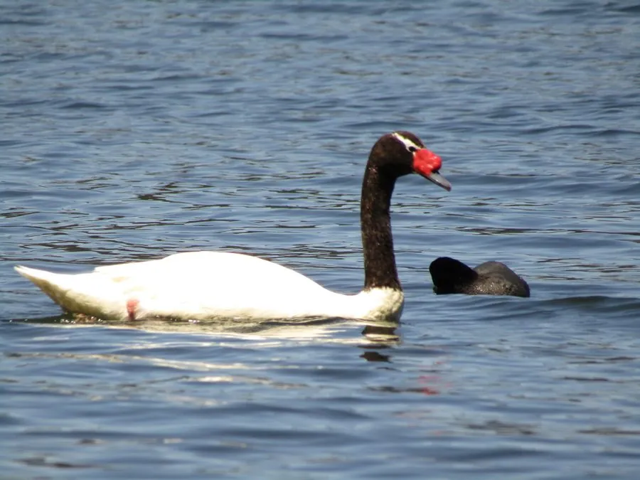

鸟类 · 动物界
黑颈天鹅 Cygnus melancoryphus

南美洲特有的天鹅，全身雪白而头颈乌黑，喙基生有鲜红色肉瘤，常成对在芦苇浅湖中游弋，是南美体型最大的水禽。
- 分类
- 门脊索动物门纲鸟纲目雁形目科鸭科属天鹅属
- 栖息环境
- 南美洲南部的浅水湖泊、沼泽、潟湖与缓流河口，喜芦苇和水草茂密处
- 地理分布
- 南美洲南部，包括智利、阿根廷、乌拉圭、巴西东南部及福克兰群岛
- 保护级别
- IUCN 无危（LC）
物种志
黑颈天鹅体长 102–124 cm，体重 3.5–6.7 kg，雄性略大于雌性。全身羽毛雪白，头颈乌黑，眼后有一道白色细纹向后延伸，喙呈蓝灰色，基部隆起的鲜红色肉瘤十分醒目，腿为粉红色。幼鸟通体浅灰，颈部尚未变黑，约一岁后逐渐换上成鸟羽色。
它们栖息于南美洲南部的浅水湖泊、沼泽与潟湖，偏好水生植物茂密、有芦苇可筑巢的水域，分布自智利、阿根廷、乌拉圭至巴西东南部和福克兰群岛，部分北方种群冬季向低纬度迁移。繁殖期成对占据一片芦苇丛，用枯草堆成浮巢，每窝产卵 4–8 枚，由雌鸟孵化约 36 天，雄鸟在附近警戒。雏鸟出壳后即随亲鸟下水，约 3–4 个月学会飞行。食物以水生植物的茎叶和根为主，也吃藻类与小型水生动物。
形态与习性
- 食性水生植物茎叶与根为主，兼食藻类和小型水生动物
- 体长102–124 cm
- 体重3.5–6.7 kg，雄性略大
- 繁殖每窝 4–8 枚，雌鸟孵化约 36 天
- 寿命野外约 20 年
- 特征头颈黑色，喙基有鲜红色肉瘤
趣味知识
- 黑颈天鹅是南美洲体型最大的水禽，雄鸟体重可超过 6 kg。
- 雏鸟出壳时绒羽浅灰，颈部并不黑，要经过一年多才长成成鸟模样。
- 亲鸟常把雏鸟驮在背上游泳，遇到危险时雏鸟会钻进母鸟的翅膀下。